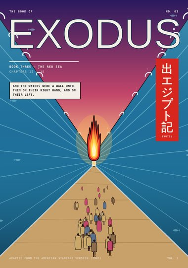
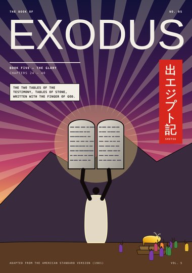
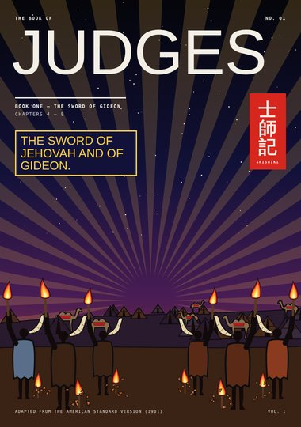
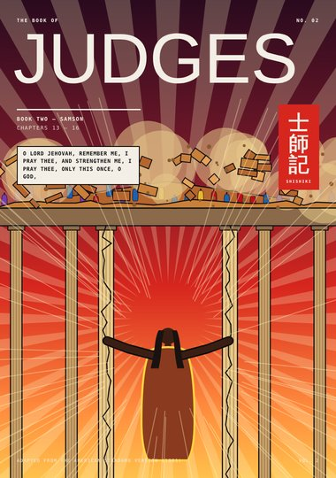
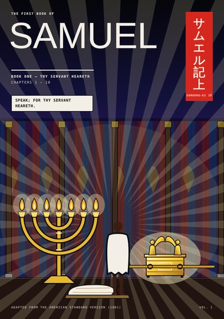
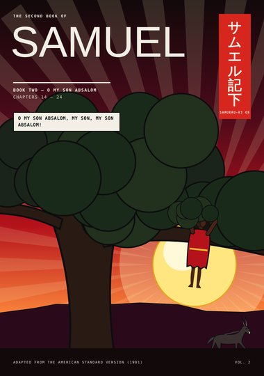

Bible Manga · 創世記
Bible Manga
The Bible as a full-color manga — one volume per book of the Bible, every scene and every line of dialogue in the words of the American Standard Version (1901). Now in progress: Genesis.
Start at the beginning ›The Full Edition
Genesis 創世記
The first book of the Bible, in full: every scene and every line of dialogue in the words of the American Standard Version (1901).

Digest Editions
The first drafts: short books of highlights from Genesis to 2 Samuel. They are being replaced by the full edition, volume by volume.
Genesis 創世記
The first book of the Bible — from the first light to Joseph in Egypt, in five books.
 Book One · Genesis 1–3The BeginningCreation in seven days, the garden of Eden, the serpent, and the way east of Eden.7 pages
Book One · Genesis 1–3The BeginningCreation in seven days, the garden of Eden, the serpent, and the way east of Eden.7 pages Book Two · Genesis 4–9The FloodCain and Abel, the generations of Adam, the ark, the deluge, and the bow in the cloud.8 pages
Book Two · Genesis 4–9The FloodCain and Abel, the generations of Adam, the ark, the deluge, and the bow in the cloud.8 pages Book Three · Genesis 11–22The PromiseThe tower of Babel, the call of Abram, Sodom and Gomorrah, and the mountain of Moriah.8 pages
Book Three · Genesis 11–22The PromiseThe tower of Babel, the call of Abram, Sodom and Gomorrah, and the mountain of Moriah.8 pages Book Four · Genesis 25–33The LadderJacob and Esau, the stolen blessing, the ladder at Bethel, and the night of wrestling at Peniel.8 pages
Book Four · Genesis 25–33The LadderJacob and Esau, the stolen blessing, the ladder at Bethel, and the night of wrestling at Peniel.8 pages Book Five · Genesis 37–50The DreamerJoseph's coat of many colors, the pit, Pharaoh's dreams, the granaries of Egypt, and the brothers forgiven.8 pages
Book Five · Genesis 37–50The DreamerJoseph's coat of many colors, the pit, Pharaoh's dreams, the granaries of Egypt, and the brothers forgiven.8 pages
Exodus 出エジプト記
The second book of the Bible — the bondage in Egypt, Moses at the burning bush, the plagues, the Red Sea, Sinai, and the glory in the tabernacle — complete in five books.
 Book One · Exodus 1–4The Bush That BurnedThe new king who knew not Joseph, the ark of bulrushes, Moses in Midian, the burning bush, I AM THAT I AM, and the rod.8 pages
Book One · Exodus 1–4The Bush That BurnedThe new king who knew not Joseph, the ark of bulrushes, Moses in Midian, the burning bush, I AM THAT I AM, and the rod.8 pages Book Two · Exodus 5–11The PlaguesLet my people go: the rods that became serpents, the river turned to blood, frogs, lice, flies, hail and fire, locusts, darkness, and the warning of midnight.8 pages
Book Two · Exodus 5–11The PlaguesLet my people go: the rods that became serpents, the river turned to blood, frogs, lice, flies, hail and fire, locusts, darkness, and the warning of midnight.8 pages
Book Three · Exodus 12–15The Red SeaThe passover lamb, the blood on the doorposts, the great cry at midnight, the pillars of cloud and fire, the sea divided, and the song of Miriam.8 pages Book Four · Exodus 16–20SinaiManna and quails, water from the rock, Aaron and Hur holding up Moses' hands, the mountain on fire, and the ten commandments.8 pages
Book Four · Exodus 16–20SinaiManna and quails, water from the rock, Aaron and Hur holding up Moses' hands, the mountain on fire, and the ten commandments.8 pages
Book Five · Exodus 24–40The GloryThe tables of stone, the golden calf, the tables broken, Moses in the cleft of the rock, his shining face, and the glory filling the tabernacle.8 pages
Numbers 民数記
The fourth book of the Bible — highlights from the wilderness: the twelve spies, forty years of wandering, water from the rock, the serpent of brass, and Balaam's ass.
Joshua ヨシュア記
The sixth book of the Bible — Joshua leads Israel over Jordan: Rahab and the scarlet line, the walls of Jericho, the sun standing still, and choose you this day.
Judges 士師記
The seventh book of the Bible — the judges Jehovah raised up: Deborah under her palm-tree, Jael's tent, Gideon's three hundred with trumpets, pitchers and torches, and Samson — complete in two books.

Book One · Judges 4–8The Sword of GideonDeborah and Barak, Sisera's chariots routed, the tent of Jael, Gideon in the winepress, the fleece, the three hundred, and the sword of Jehovah and of Gideon.8 pages
Book Two · Judges 13–16SamsonThe Nazirite from the womb, the young lion, three hundred foxes, the jawbone, the gates of Gaza, Delilah, the seven locks, and the two middle pillars.8 pages
Ruth ルツ記
The eighth book of the Bible — Ruth the Moabitess cleaves to Naomi, gleans in the field of Boaz, and becomes the great-grandmother of David.
1 Samuel サムエル記上
The ninth book of the Bible — Hannah's prayer, the child Samuel who answers in the night, the ark among the Philistines, Israel's first king, and David and Goliath.

Book One · 1 Samuel 1–10Thy Servant HearethHannah's vow at Shiloh, the child given to Jehovah, the voice in the night and "Speak; for thy servant heareth," the ark taken and Dagon fallen on his face, the kine that carried it home, and Saul anointed king.9 pages Book Two · 1 Samuel 16–31The Battle Is Jehovah'sDavid anointed among his brethren, the harp for Saul, Goliath of Gath, five smooth stones and a sling, Jonathan's covenant, Saul's spear, the skirt of Saul's robe in the cave, and Saul's end on mount Gilboa.10 pages
Book Two · 1 Samuel 16–31The Battle Is Jehovah'sDavid anointed among his brethren, the harp for Saul, Goliath of Gath, five smooth stones and a sling, Jonathan's covenant, Saul's spear, the skirt of Saul's robe in the cave, and Saul's end on mount Gilboa.10 pages
2 Samuel サムエル記下
The tenth book of the Bible — David king over all Israel, the ark brought up to Jerusalem, the promise of a throne for ever, Nathan's word to the king, and Absalom's revolt.
 Book One · 2 Samuel 1–12Thou Art the ManDavid mourns Saul and Jonathan, is anointed king in Hebron and takes Zion, dances before the ark, receives the promise of a house for ever, shows kindness to Mephibosheth, sends Uriah to the forefront of the battle, and hears Nathan's parable of the ewe lamb.9 pages
Book One · 2 Samuel 1–12Thou Art the ManDavid mourns Saul and Jonathan, is anointed king in Hebron and takes Zion, dances before the ark, receives the promise of a house for ever, shows kindness to Mephibosheth, sends Uriah to the forefront of the battle, and hears Nathan's parable of the ewe lamb.9 pages
Book Two · 2 Samuel 14–24O My Son AbsalomAbsalom's beauty and his hair, the hearts he stole at the gate, David's flight weeping up the mount of Olives, the forest of Ephraim and the great oak, the runner with tidings, the king's cry in the chamber over the gate, and the altar on Araunah's threshing-floor.9 pages
All pages
Genesis · Chapter 1: In the Beginning
- Cover Cover Genesis 1–3
- Title Chapter 1: In the Beginning Genesis 1 – 3
- Page 1 Let There Be Light Genesis 1:1–4
- Page 2 The Firmament Genesis 1:5–8
- Page 3 The Dry Land Genesis 1:9–13
- Page 4 The Two Great Lights Genesis 1:14–19
- Page 5 The Waters Swarm Genesis 1:20–23
- Page 6 In Our Image Genesis 1:24–27
- Page 7 Very Good Genesis 1:28–31
- Page 8 The Dust of the Ground Genesis 2:1–7
- Page 9 A Garden Eastward, in Eden Genesis 2:8–14
- Page 10 The Man Gave Names Genesis 2:15–20
- Page 11 Bone of My Bones Genesis 2:21–25
- Page 12 Yea, Hath God Said? Genesis 3:1–5
- Page 13 Where Art Thou? Genesis 3:6–10
- Page 14 What Is This Thou Hast Done? Genesis 3:11–16
- Page 15 Dust Thou Art Genesis 3:17–19
- Page 16 East of Eden Genesis 3:20–24
Genesis (digest) · Book One: The Beginning
- Cover Cover Genesis 1–3
- Page 1 Let There Be Light Genesis 1:1–3
- Page 2 Day and Firmament Genesis 1:4–8
- Page 3 Land, Seed, Lights Genesis 1:9–19
- Page 4 Living Things and Man Genesis 1:20 – 2:7
- Page 5 Rest and Eden Genesis 2:2–17
- Page 6 The Woman and the Serpent Genesis 2:21 – 3:5
- Page 7 The Fall Genesis 3:6–24
Genesis (digest) · Book Two: The Flood
- Cover Cover Genesis 4–9
- Page 1 The Offerings Genesis 4:2–7
- Page 2 In the Field Genesis 4:8–11
- Page 3 The Mark of Cain Genesis 4:12–17
- Page 4 The Generations Genesis 5 – 6:8
- Page 5 The Ark Genesis 6:14 – 7:16
- Page 6 The Deluge Genesis 7:11–23
- Page 7 The Raven and the Dove Genesis 8
- Page 8 The Covenant Genesis 8:20 – 9:17
Genesis (digest) · Book Three: The Promise
- Cover Cover Genesis 11–22
- Page 1 Brick for Stone Genesis 11:1–4
- Page 2 Babel Genesis 11:5–9
- Page 3 The Call of Abram Genesis 12:1–7
- Page 4 Number the Stars Genesis 15:5–6
- Page 5 Sarah Laughed Genesis 18 – 21
- Page 6 Fire from Heaven Genesis 19:24–28
- Page 7 The Way to Moriah Genesis 22:1–8
- Page 8 Jehovah-jireh Genesis 22:9–18
Genesis (digest) · Book Four: The Ladder
- Cover Cover Genesis 25–33
- Page 1 The Twins Genesis 25:24–27
- Page 2 The Red Pottage Genesis 25:29–34
- Page 3 The Stolen Blessing Genesis 27:1–29
- Page 4 A Bitter Cry Genesis 27:34–43
- Page 5 The Ladder at Bethel Genesis 28:10–19
- Page 6 Rachel Genesis 29:9–20
- Page 7 Wrestling at Peniel Genesis 32:24–31
- Page 8 The Brothers Meet Genesis 33:1–4
Genesis (digest) · Book Five: The Dreamer
- Cover Cover Genesis 37–50
- Page 1 The Coat and the Dreams Genesis 37:3–9
- Page 2 The Pit Genesis 37:18–28
- Page 3 Jacob's Grief Genesis 37:31–35
- Page 4 Egypt and the Prison Genesis 39 – 40
- Page 5 Pharaoh's Dream Genesis 41:1–7
- Page 6 Before Pharaoh Genesis 41:14–42
- Page 7 Grain as the Sand Genesis 41:47 – 42:9
- Page 8 I Am Joseph Genesis 45:1–4; 50:20
Exodus (digest) · Book One: The Bush That Burned
Exodus (digest) · Book Two: The Plagues
- Cover Cover Exodus 5–11
- Page 1 Let My People Go Exodus 5:1–12
- Page 2 Rod Against Rod Exodus 7:10–13
- Page 3 The River Turned to Blood Exodus 7:20–24
- Page 4 Frogs, Lice and Flies Exodus 8:6–24
- Page 5 Murrain, Boils and Hail Exodus 9:6–24
- Page 6 The Locusts Exodus 10:3–16
- Page 7 Darkness Exodus 10:21–29
- Page 8 One Plague More Exodus 11:1–8
Exodus (digest) · Book Three: The Red Sea
- Cover Cover Exodus 12–15
- Page 1 The Passover Lamb Exodus 12:1–11
- Page 2 When I See the Blood Exodus 12:12–23
- Page 3 A Great Cry Exodus 12:29–31
- Page 4 Out of Egypt Exodus 12:37–13:21
- Page 5 Pharaoh Pursues Exodus 14:5–11
- Page 6 Stand Still Exodus 14:13–21
- Page 7 Dry Ground Exodus 14:22–25
- Page 8 The Horse and His Rider Exodus 14:27–15:21
Exodus (digest) · Book Four: Sinai
- Cover Cover Exodus 16–20
- Page 1 Bread from Heaven Exodus 16:2–4
- Page 2 Manna Exodus 16:13–31
- Page 3 The Rock in Horeb Exodus 17:3–6
- Page 4 Hands Held Up Exodus 17:8–13
- Page 5 The Mountain Smoked Exodus 19:16–20
- Page 6 I Am Jehovah Thy God Exodus 20:1–7
- Page 7 The Ten Words Exodus 20:8–17
- Page 8 Afar Off Exodus 20:18–21
Exodus (digest) · Book Five: The Glory
- Cover Cover Exodus 24–40
- Page 1 Come Up to Me Exodus 24:12–18
- Page 2 The Finger of God Exodus 31:18–32:1
- Page 3 Make Us Gods Exodus 32:1–4
- Page 4 They Rose Up to Play Exodus 32:6–8
- Page 5 He Brake Them Exodus 32:15–19
- Page 6 Who Is on Jehovah's Side? Exodus 32:20–26
- Page 7 Show Me Thy Glory Exodus 33:18–23
- Page 8 The Glory Filled the Tabernacle Exodus 34:29–40:38
Numbers (digest) · Book One: In the Wilderness
- Cover Cover Numbers 13–24
- Page 1 The Twelve Spies Numbers 13:1–23
- Page 2 The Evil Report Numbers 13:27–33
- Page 3 The People Wept Numbers 14:1–9
- Page 4 Forty Years Numbers 14:33–20:8
- Page 5 He Smote the Rock Twice Numbers 20:10–12
- Page 6 The Serpent of Brass Numbers 21:5–9
- Page 7 Balaam's Ass Numbers 22:22–28
- Page 8 A Star out of Jacob Numbers 22:29–24:17
Joshua (digest) · Book One: Jericho
- Cover Cover Joshua 1–24
- Page 1 Be Strong Joshua 1:1–9
- Page 2 Rahab Joshua 2:1–21
- Page 3 Crossing Jordan Joshua 3:15–17
- Page 4 The Prince of the Host Joshua 5:13–15
- Page 5 Compass the City Joshua 6:2–16
- Page 6 The Wall Fell Down Flat Joshua 6:20
- Page 7 Sun, Stand Thou Still Joshua 10:12–14
- Page 8 Choose You This Day Joshua 24:14–29
Judges (digest) · Book One: The Sword of Gideon
- Cover Cover Judges 4–8
- Page 1 The Palm-tree of Deborah Judges 4:4–9
- Page 2 This Is the Day Judges 4:14–15
- Page 3 The Tent of Jael Judges 4:17–21
- Page 4 Thou Mighty Man of Valor Judges 6:11–15
- Page 5 The Fleece Judges 6:36–40
- Page 6 Three Hundred Men Judges 7:2–7
- Page 7 The Sword of Jehovah and of Gideon Judges 7:16–20
- Page 8 Jehovah Shall Rule Judges 7:21–8:28
Judges (digest) · Book Two: Samson
- Cover Cover Judges 13–16
- Page 1 A Nazirite unto God Judges 13:3–24
- Page 2 The Young Lion Judges 14:5–6
- Page 3 Three Hundred Foxes Judges 15:4–5
- Page 4 The Jawbone Judges 15:14–16
- Page 5 The Gates of Gaza Judges 16:3–4
- Page 6 Wherein Thy Great Strength Lieth Judges 16:5–17
- Page 7 The Philistines Are upon Thee Judges 16:19–21
- Page 8 The Pillars Judges 16:22–30
Ruth (digest) · Book One: Whither Thou Goest
- Cover Cover Ruth 1–4
- Page 1 When the Judges Judged Ruth 1:1–5
- Page 2 Return, Each of You Ruth 1:8–14
- Page 3 Whither Thou Goest Ruth 1:16–19
- Page 4 Call Me Mara Ruth 1:19–22
- Page 5 The Field of Boaz Ruth 2:2–5
- Page 6 Under Whose Wings Ruth 2:8–17
- Page 7 The Threshing-floor Ruth 3:2–11
- Page 8 Obed Ruth 4:9–17
1 Samuel (digest) · Book One: Thy Servant Heareth
- Cover Cover 1 Samuel 1–10
- Page 1 Hannah 1 Samuel 1:2–11
- Page 2 Asked of Jehovah 1 Samuel 1:20 – 3:1
- Page 3 Here Am I 1 Samuel 3:3–8
- Page 4 Speak 1 Samuel 3:9–20
- Page 5 The Ark of God Was Taken 1 Samuel 4:3–22
- Page 6 Dagon 1 Samuel 5:2–4
- Page 7 The Kine 1 Samuel 6:10–13
- Page 8 Give Us a King 1 Samuel 8:4–20
- Page 9 Long Live the King 1 Samuel 9:2 – 10:24
1 Samuel (digest) · Book Two: The Battle Is Jehovah's
- Cover Cover 1 Samuel 16–31
- Page 1 The Youngest 1 Samuel 16:1–11
- Page 2 Arise, Anoint Him 1 Samuel 16:12–23
- Page 3 Goliath of Gath 1 Samuel 17:4–11
- Page 4 The Living God 1 Samuel 17:26–37
- Page 5 Five Smooth Stones 1 Samuel 17:38–40
- Page 6 In the Name of Jehovah 1 Samuel 17:42–47
- Page 7 A Sling and a Stone 1 Samuel 17:48–51
- Page 8 Jonathan 1 Samuel 18:1–11
- Page 9 The Cave 1 Samuel 24:3–17
- Page 10 Mount Gilboa 1 Samuel 31:1–6
2 Samuel (digest) · Book One: Thou Art the Man
- Cover Cover 2 Samuel 1–12
- Page 1 Mourning 2 Samuel 1:11–17
- Page 2 King over All Israel 2 Samuel 5:3–11
- Page 3 The Ark Comes Up 2 Samuel 6:2–12
- Page 4 Dancing before Jehovah 2 Samuel 6:14–16
- Page 5 For Ever 2 Samuel 7:1–18
- Page 6 Mephibosheth 2 Samuel 9:3–13
- Page 7 The Letter 2 Samuel 11:1–27
- Page 8 The Ewe Lamb 2 Samuel 12:1–5
- Page 9 Thou Art the Man 2 Samuel 12:7–24
2 Samuel (digest) · Book Two: O My Son Absalom
- Cover Cover 2 Samuel 14–24
- Page 1 No Blemish in Him 2 Samuel 14:25–26
- Page 2 He Stole the Hearts 2 Samuel 15:2–6
- Page 3 Absalom Is King in Hebron 2 Samuel 15:10–14
- Page 4 The Mount of Olives 2 Samuel 15:23–30
- Page 5 Deal Gently 2 Samuel 18:5–8
- Page 6 Between Heaven and Earth 2 Samuel 18:9–17
- Page 7 Tidings 2 Samuel 18:24–32
- Page 8 O My Son 2 Samuel 18:33 – 19:2
- Page 9 Which Cost Me Nothing 2 Samuel 24:18–25